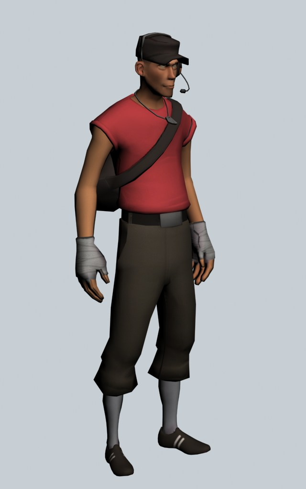
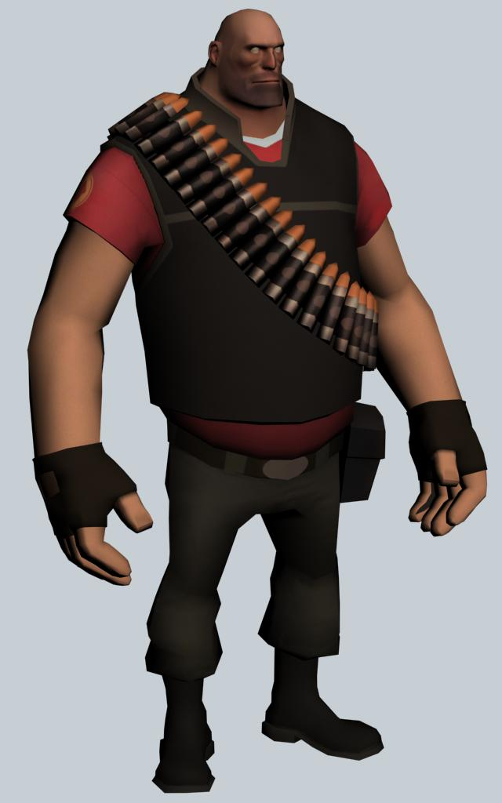
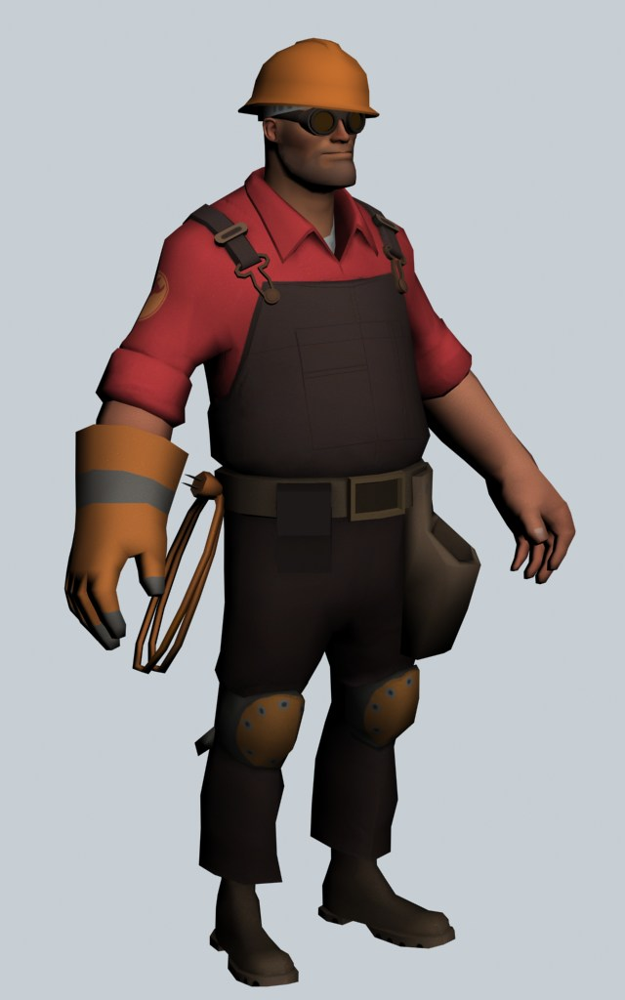
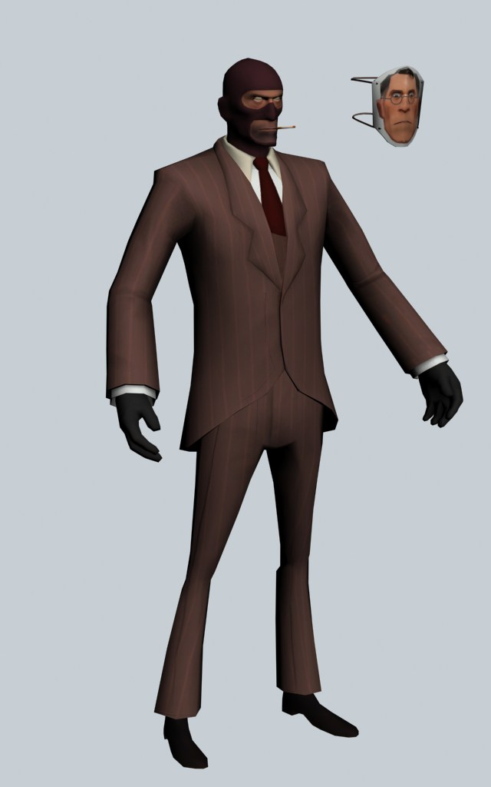
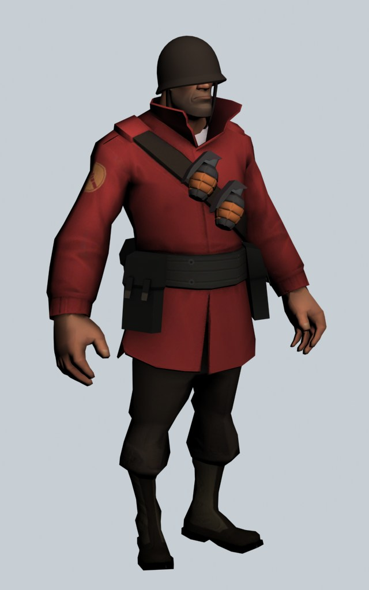
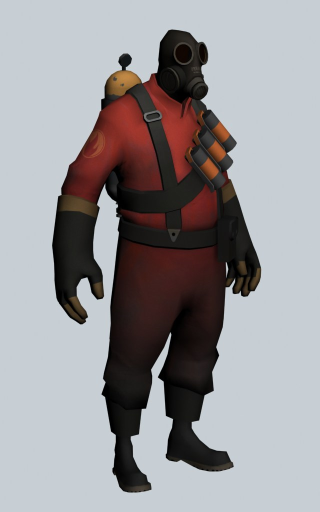
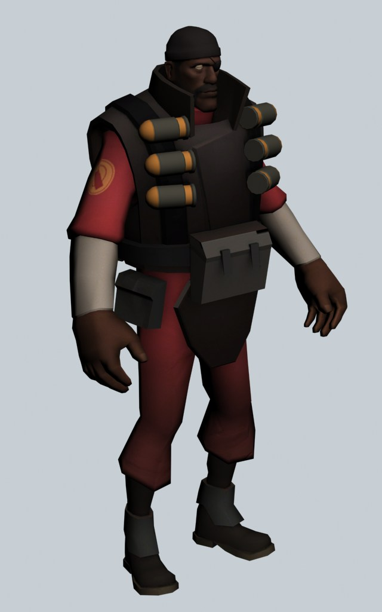
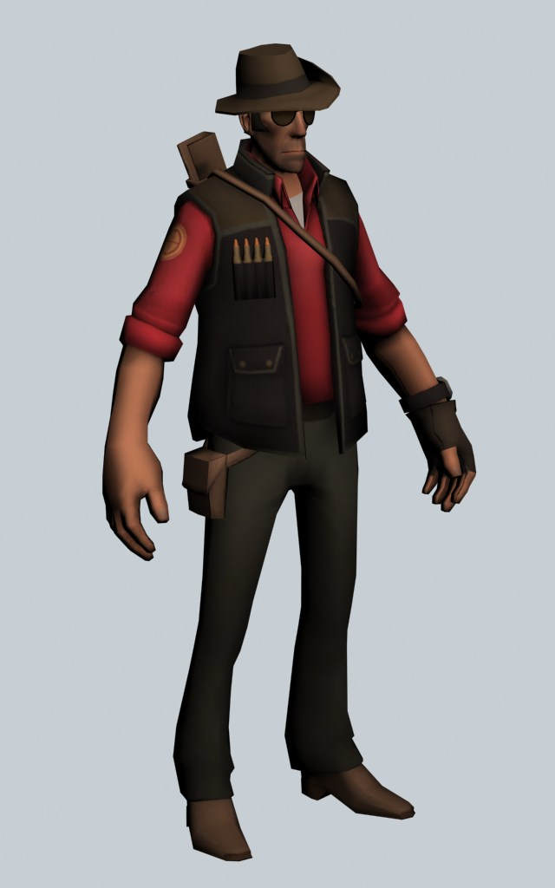

workshop
history
community
fanmade
Одной из отличительных черт TF2 является его мультяшная графика, которая придаёт игре легкость и хумор. Игра предлагает два противостоящих стиля — команду RED и команду BLU, каждый из которых состоит из различных уникальных классов персонажей. В TF2 семь основных классов, каждый из которых обладает своими собственными способностями, ролями и стилями игры:
1. Солдат: универсальный боевой класс, вооруженный ракетницей, отлично умеющий применять тактику и мощное нанесение урона.
2. Снайпер: мастер дальнего боя, способный устранять врагов с одного выстрела с помощью своей снайперской винтовки.
3. Медик: заботливый врач, который лечит и восстанавливает здоровье своих товарищей по команде, обеспечивая им поддержку в бою.
4. Тяжеловес: могучий и живучий класс, обладающий мощным оружием и способный получать много урона.
5. Пироманьяк: эксцентричный персонаж с огнеметом, который создает хаос на поле боя, поджигая врагов.
6. Инженер: умелый механик, который может строить турели, лечить своих товарищей и создавать телепорты для быстрого перемещения.
7. Скаут: быстрый и маневренный класс, который может захватывать точки и уничтожать врагов с близкого расстояния.
Игровой процесс TF2 сосредоточен на командных сражениях, причем каждая команда борется за выполнение определенных целей, таких как захват контрольных точек, доставка груза или защита базы. Игра поощряет сотрудничество и стратегическое планирование, так как успех обычно достигается через командную работу и грамотное использование навыков каждого класса.
Кроме того, TF2 славится своим юмором, яркой атмосферой и множеством уникальных карт, где игроки могут сражаться. Игра также поддерживает обновления и события, которые добавляют новые предметы, косметику и режимы, что помогает удерживать интерес к ней.
Team Fortress 2 стала не только культовой игрой, но и настоящим явлением в игровом сообществе, продолжая активно развиваться и получать признание от поклонников по всему миру.Открылась игра
10 октября 2007 года
Снайпер-Его основная способность — это прицеливание, которое увеличивает урон при удерживании прицела, что позволяет снайперу убивать врагов с одного выстрела, если они находятся в пределах его досягаемости.
Cкаут-Скаут изображен как дерзкий и безрассудный персонаж с характерным Бостонским акцентом, что добавляет ему индивидуальности и делает его запоминающимся.
Инженер-Успех инженера зависит от его способностей быстро находить подходящие места для установки своих устройств, что позволит максимизировать их эффективность.
Хэви-Успех Хэви во многом зависит от понимания позиции, где он может максимально использовать свою мощь и защитить своих союзников
Медик-Медик является основным классом поддержки. Его задача — поддерживать здоровье команды, лечить раненых союзников и обеспечивать их жизнедеятельность во время боев.
Поджигатель-Успешный Поджигатель должен использовать скрытность и окружение, чтобы находить неожиданные подходы к врагам. Его возможность заставить врагов паниковать и бегать в разные стороны делает его опасным противником.
Шпион-Успешная игра за Шпиона требует хорошего понимания карты и умения находить слабые места врагов. Оптимально использовать обман и скрытность, чтобы подойти к врагам сзади и нанести удар, избегая обнаружения.
Подрыватель-Успешная игра за Подрывателя требует понимания карты, где можно расположить накладные мины и эффективно использовать гранаты. Умение предсказывать движения врагов и ставить ловушки поможет создать серьезные проблемы для противников.
Cолдат-Работа Солдата в команде также включает использование своих навыков синхронно с другими классами, например, используя ракеты для прикрытия или поддержки Медика во время атак.









Комьюнити-Сообщество Team Fortress 2 (TF2) — это активная и преданная группа игроков, которая с момента выхода игры в 2007 году создала уникальную культуру, основанную на сотрудничестве, креативности и юморе. Оно активно участвует в разработке контента, включая модификации, карты и пользовательские игровые режимы. Игроки создают фан-арт, анимации и мемы, которые становятся частью интернет-культуры. Соревновательный аспект сообщества также важен, с регулярными турнирами, где команды сражаются друг с другом. Обмен опытом и поддержка между игроками делают это сообщество дружелюбным и вдохновляющим местом для новых и опытных игроков.
Team Fortress 2 была создана компанией Valve Software и стала частью сборника "The Orange Box", выпущенного в 2007 году. Разработка игры началась в 1998 году как модификация для Quake, а затем трансформировалась в самостоятельный проект. Первоначально она задумывалась как реалистичный шутер, но в процессе разработки была переработана в мультяшный стиль с уникальными классами персонажей, каждый из которых имел свои способности и роль в команде.
Valve решила создать игру на основе многопользовательского геймплея с акцентом на командное взаимодействие. В отличие от оригинального Team Fortress, этот сиквел выделялся яркой графикой, разнообразием игровых режимов и глубоким юмором. Команда разработчиков активно сотрудничала с художниками, дизайнерами и сценаристами, чтобы сформировать уникальный художественный стиль и атмосферу.
Постоянные обновления и поддержка после запуска помогли игре сохранить долголетие и популярность среди игроков, что сделало TF2 одним из самых известных многопользовательских шутеров в игровые индустрии.